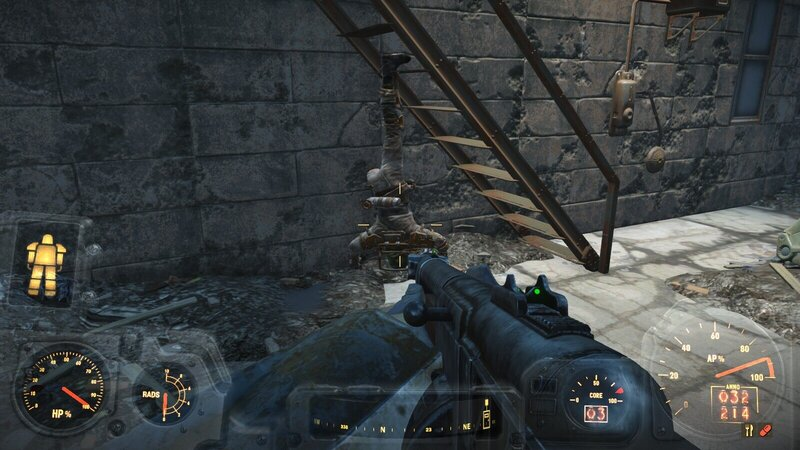
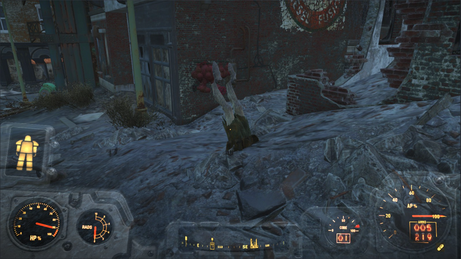
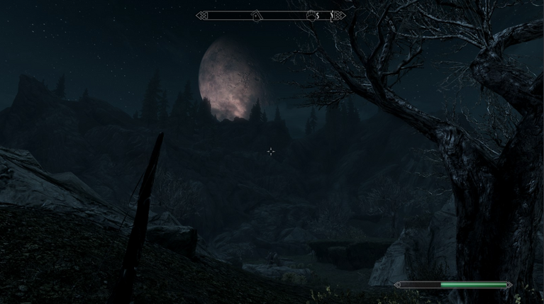

Welcome Home!
Welcome to my gaming blog! I plan to expand this to be a fully searchable wealth of knowledge on all the games I play. I am known as a game completionist in my circles, so I've had the chance to find many easter eggs and cool mods I'd love to share with others! I like to program games in my spare time, so as time goes on I might just create an entry for that. Stay tuned!
While I'm playing, I find a ton of things I want to share with others aside from the things I deem important, things like funny bugs or screenshots of interesting finds. I plan on sharing those in their respective categories, too! As I continue in creating things for the various games I play, I will be sure to keep this blog updated.
To close out this page, here are a few screenshots of funny things I've found in one of my favorites, Fallout 4.
He clipped through the staircase. Sucks to be him, I guess.
Bethesda has certainly made a name for themselves in having some of the buggiest games out there. Don't get me wrong! I love their games. I'm an avid enjoyer of the Fallout series and I LOVED Skyrim, but...
Speaking of Skyrim, I feel like we don't give the art team enough credit for the work they did on the surroundings.
I took that shot while running away from a bear! Yeah, not exactly as serene as it looks, but what can I say? I love the work they did on the environment.